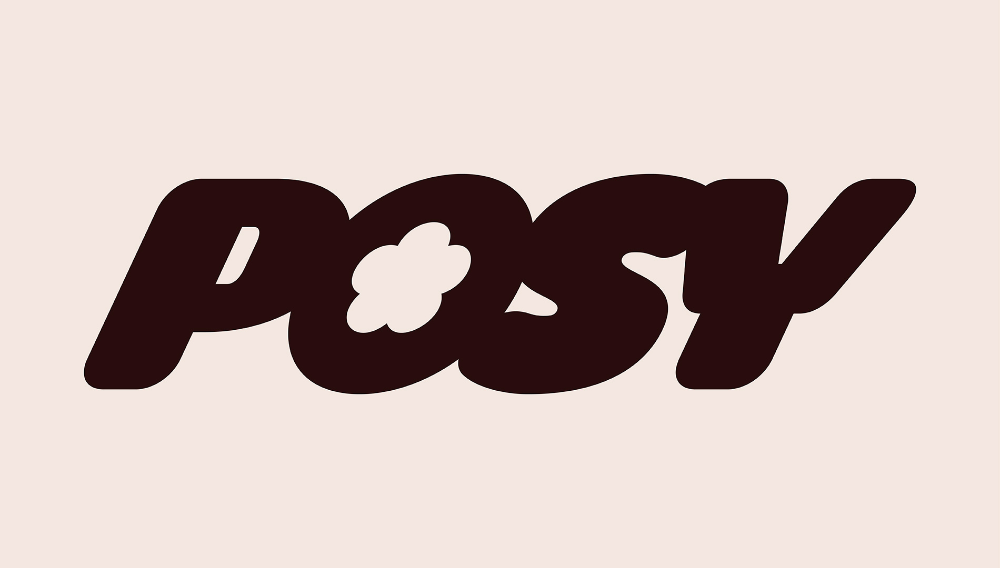
Background
Many people experience misunderstandings, miscommunication, and unmet needs in their relationships because they are unaware of their own or others’ ways of giving and receiving care. This can occur in romantic, friendship, and family contexts, and can be influenced by differences in attachment styles, culture, or generational expectations. As a result, opportunities for meaningful connection and emotional visibility are often missed.
I investigated how individuals express and receive care and affection, navigate differences, and show vulnerability with attention to age, culture, and context out of a passion for human connection and attention to detail. My goal is to identify strategies that foster clearer and more empathetic interpersonal connections while also encouraging self-exploration to better understand one’s preferences, attachment styles and boundaries.
Strategy
My research revealed that love is often misunderstood, not because it’s absent, but because it’s expressed in different ways, shaped by upbringing and emotional awareness. Understanding these frameworks helps explain why relationships (romantic, familial, or platonic) succeed or struggle based on how love is communicated. My research also confirmed that self-awareness and wanting open dialogue are essential for emotional well-being and bridging misunderstandings through empathy and adaptability. Moving forward, these insights have guided my creative phase by emphasizing reflection, inclusivity, and emotional fluency.
I will be creating space for people to recognize, express, and explore love in ways that feel authentic to them. This understanding led me to create a zine that visualizes these emotional differences through art and storytelling, making abstract ideas about love and attachment tangible and relatable. Accompanied by a social media profile to further its branding, POSY transforms complex emotional concepts into accessible tools for self-discovery, encouraging readers to better understand themselves and nurture more authentic relationships.
Demographic
The primary target audience are teenagers (ages 13–19) navigating romantic or close platonic relationships, who often experience miscommunication due to differences in emotional expression. They would value accessible, practical tools for improving their personal and relational well-being. The secondary target audience are members of varying ages, with a focus on intergenerational relationships. They may live in the same household or be separated but remain in communication. Family members can fall within an age range of 13–65, often balancing school, work, caregiving, and family responsibilities.
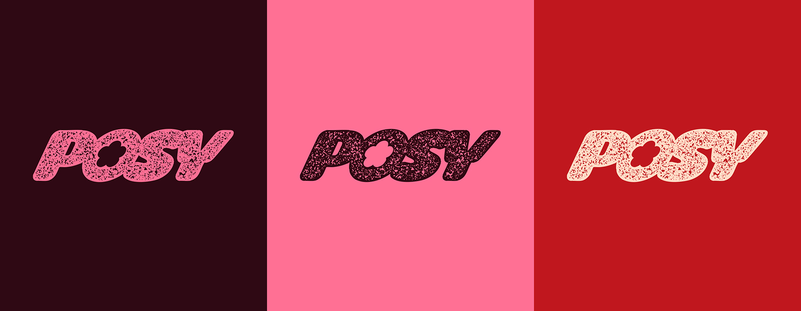
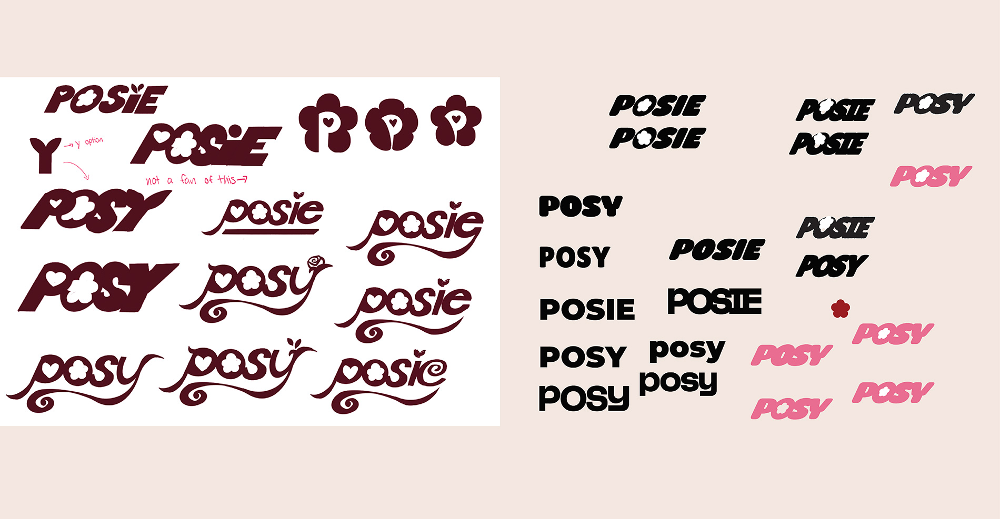
Logo Exploration
Why did I choose "posy?" I took inspiration from the classic nursery rhyme, “ring around the rosy, pocketful of posy.” A posy is a small bouquet, which began the inspiration for a floral theme. Posy is your pocket guide to blooming connection.
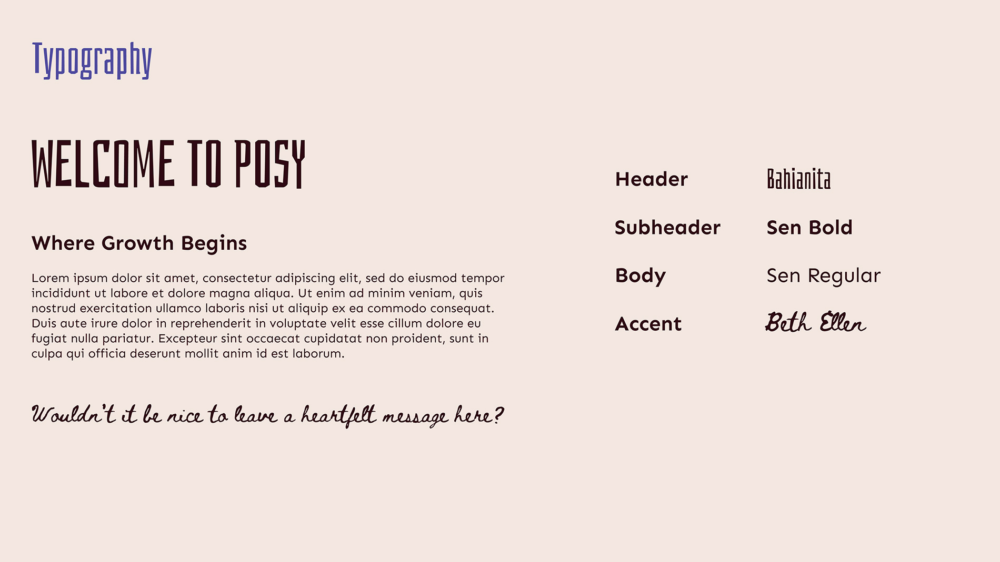
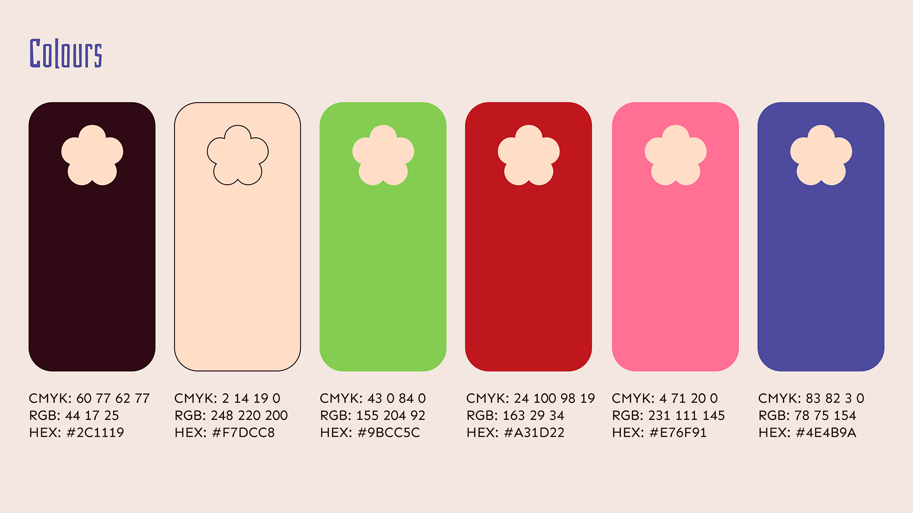
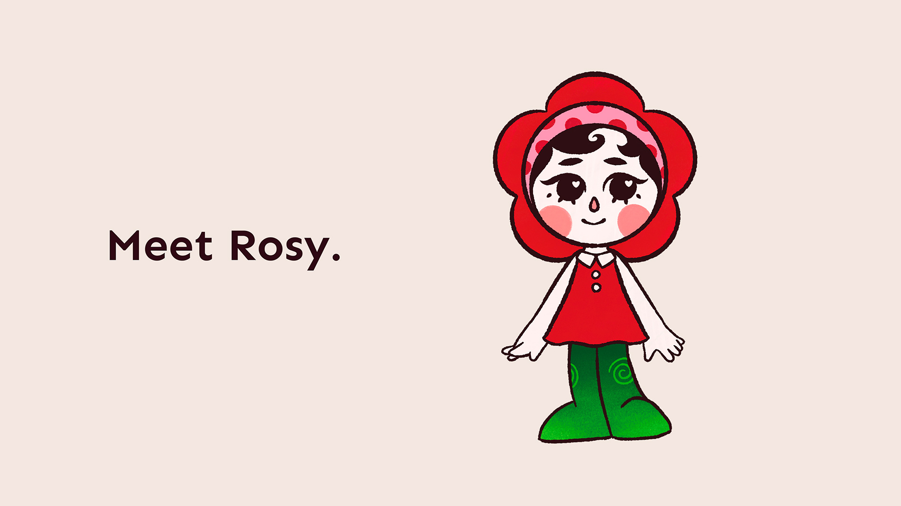
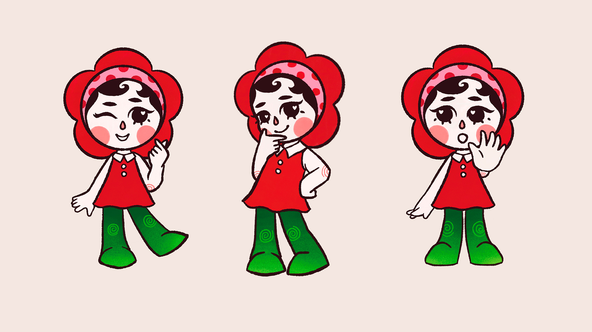
Mascot
Who better to guide you through than a mascot? Meet Rosy. Rosy was created to be your curious little motivator, walking by your side as you navigate through the zine. She’s here to grow alongside readers, and is the primary encouraging voice behind Posy.
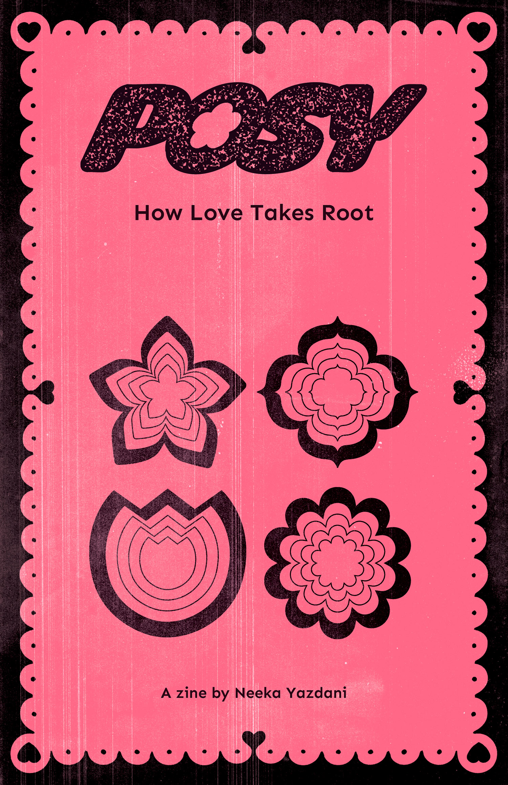
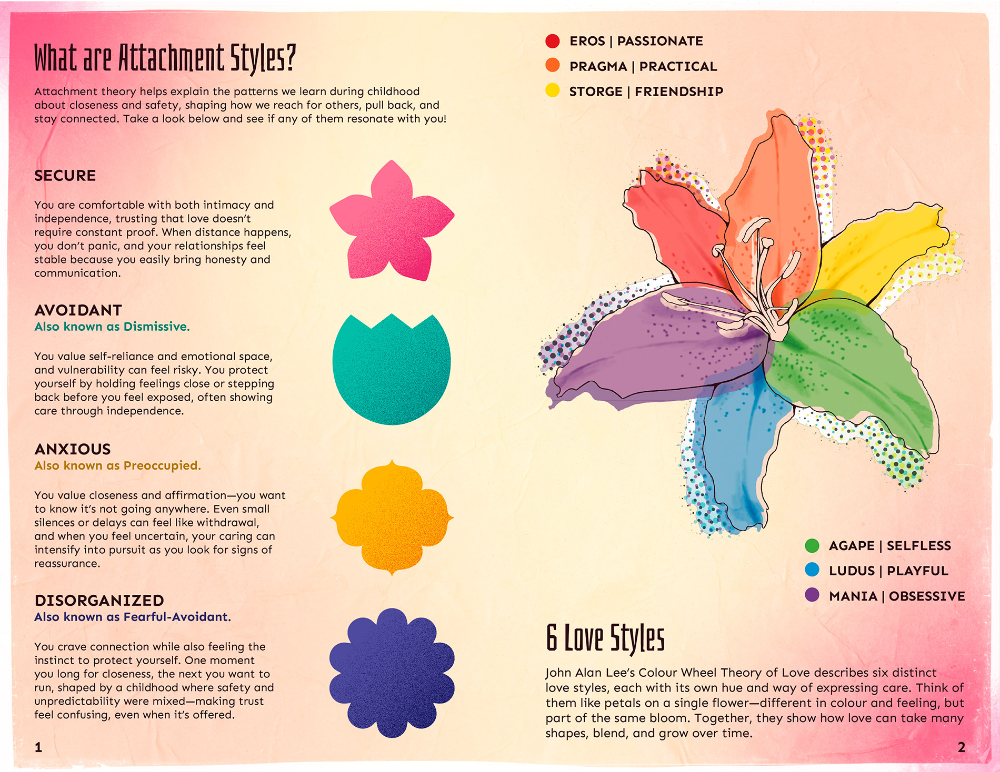
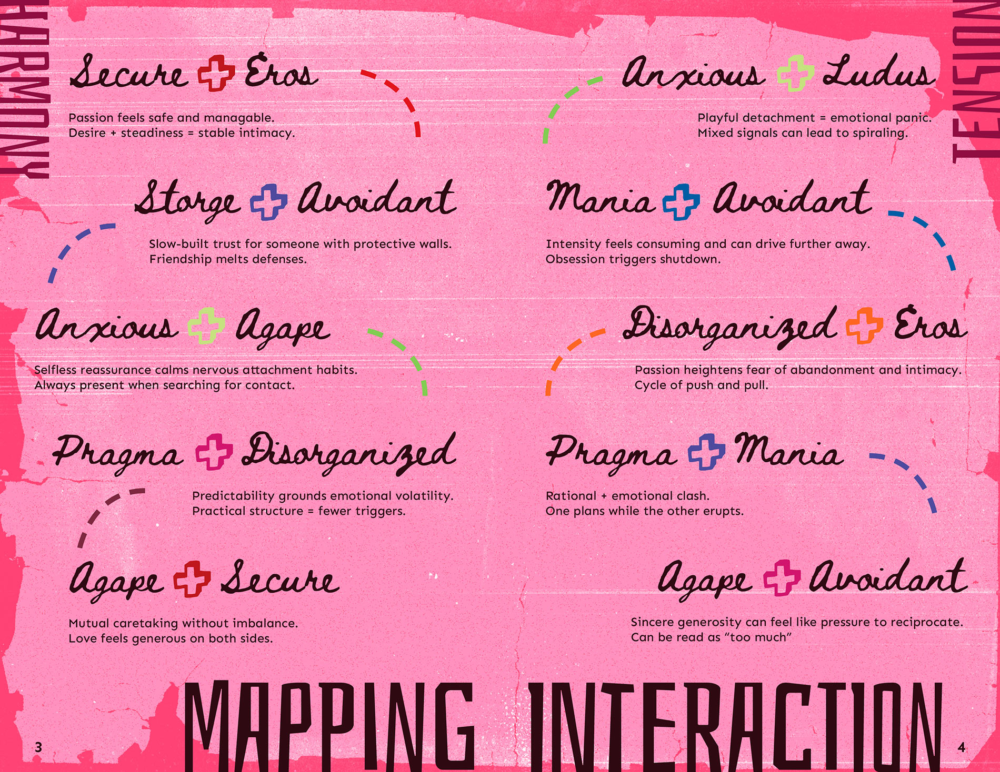
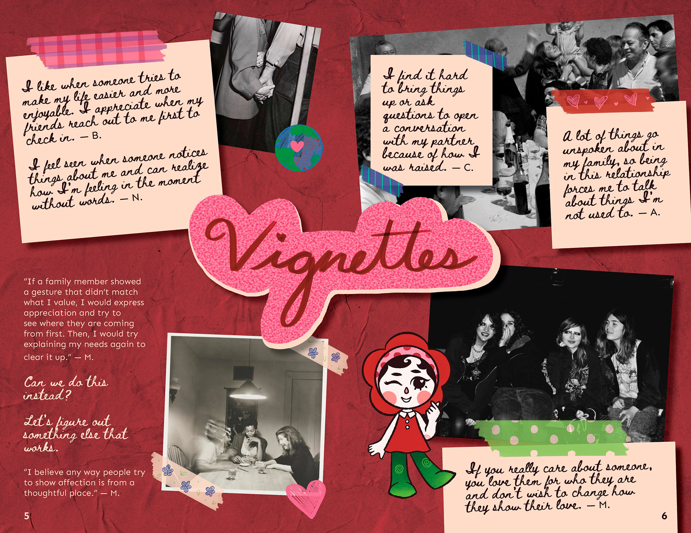
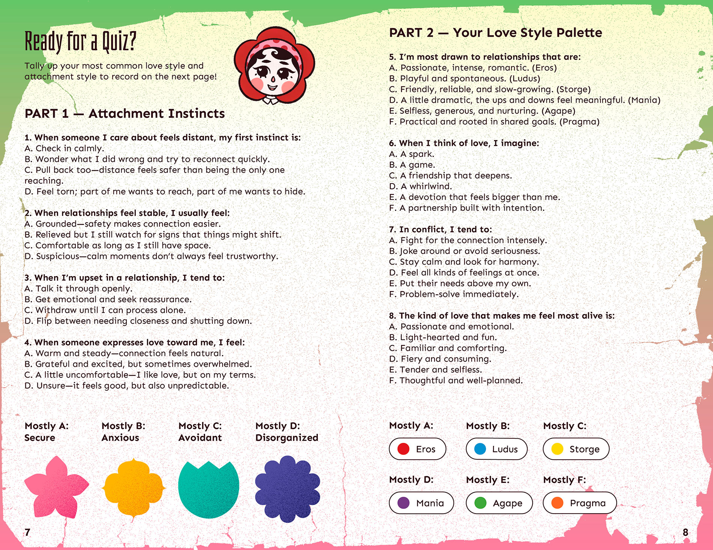
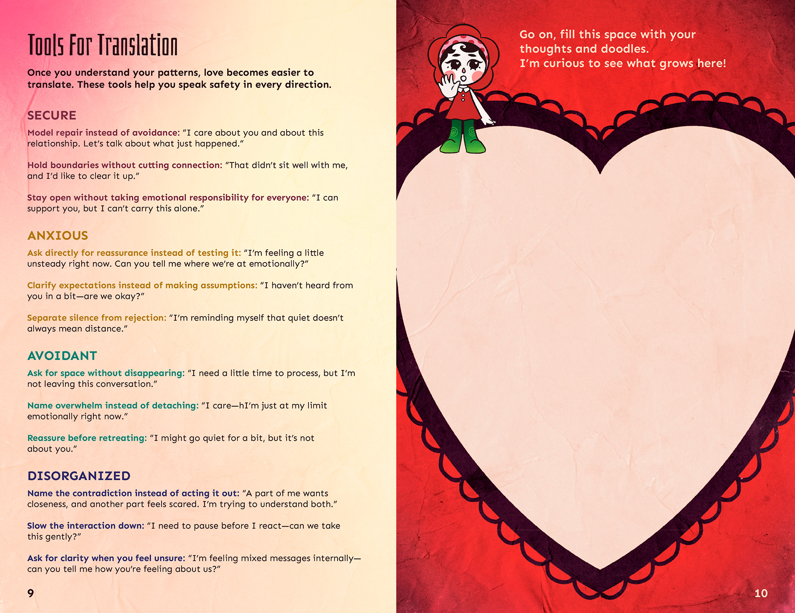
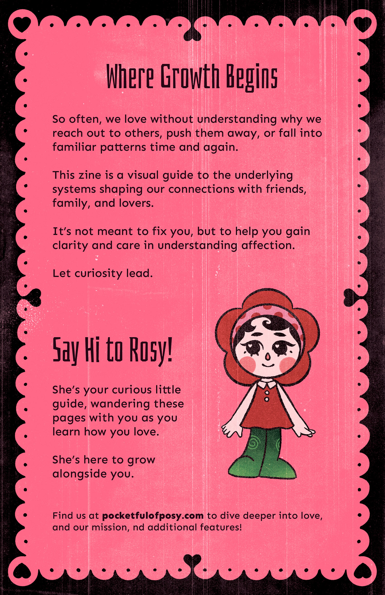
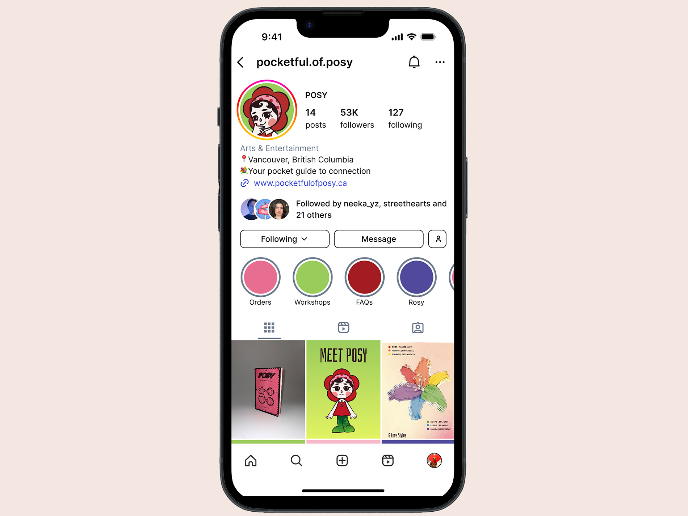
Social Media Profile
To view the Figma prototype, click here.